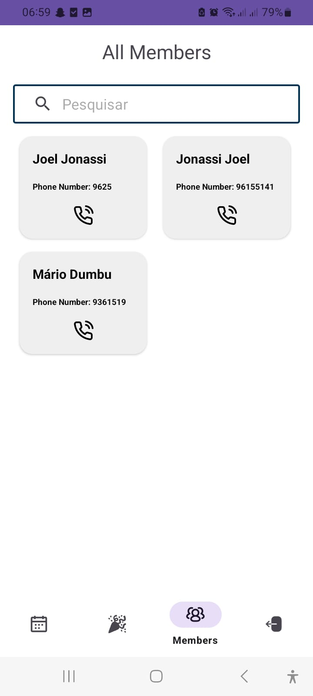
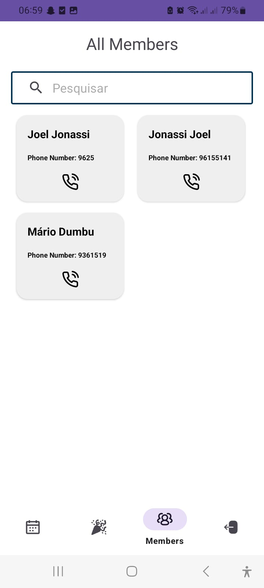
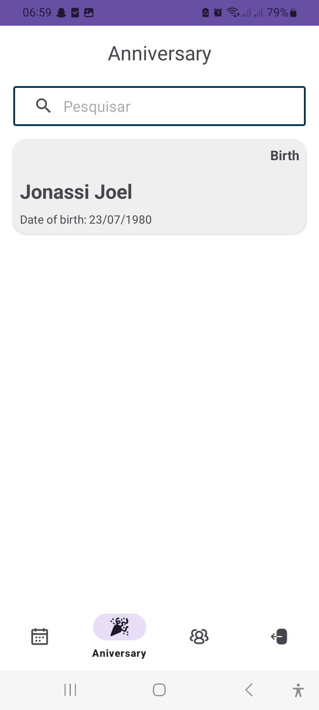
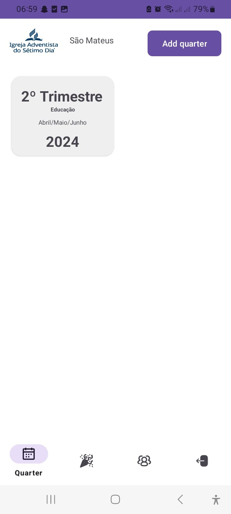
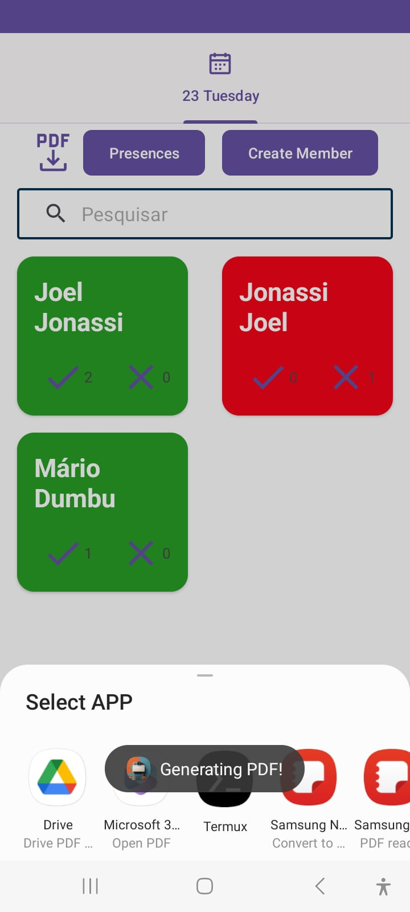
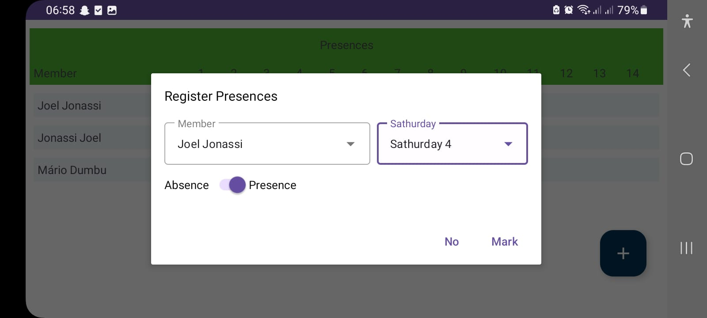

Check absence App
The Church Member Registration App is designed to simplify the process of managing members and tracking attendance at the Adventist Church in São Mateus de Oliveira, Famalicão. By using Firebase for real-time data storage, this app allows church leaders to efficiently manage church activities, track member presence, and stay connected with the congregation.
 





Key Features
Anniversary Reminders Get notified about key events like birthdays,
marriages,
and baptisms, ensuring timely celebrations and well-wishes.
Reports Generation
Generate comprehensive historical reports (PDF) for every trimester, allowing church leaders to keep track of attendance and other important data.
Direct Communication The app allows leaders to make quick phone calls
directly
to members, ensuring seamless communication.